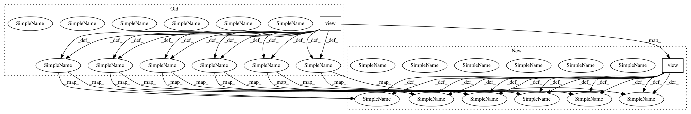

dbd087f55b79484532451d2754dcf10d60564fc3,se3cnn/batchnorm.py,SE3BatchNorm,forward,#SE3BatchNorm#,46
Before Change
if d == 1: // scalars
if self.training:
field_mean = field.mean(0).mean(-1).view(-1).detach() // [feature]
new_means.append(self._roll_avg(self.running_mean[irm:irm+m], field_mean))
else:
field_mean = self.running_mean[irm: irm + m]
irm += m
field = field - field_mean.view(1, m, 1, 1) // [batch, feature, repr, x * y * z]
if self.training:
field_norm = torch.sum(field ** 2, dim=2) // [batch, feature, x * y * z]
if self.reduce == "mean":
field_norm = field_norm.mean(-1) // [batch, feature]
elif self.reduce == "max":
field_norm = field_norm.max(-1)[0] // [batch, feature]
else:
raise ValueError("Invalid reduce option")
field_norm = field_norm.mean(0).detach() // [feature]
new_vars.append(self._roll_avg(self.running_var[irv: irv+m], field_norm))
else:
field_norm = self.running_var[irv: irv + m]
irv += m
field_norm = (field_norm + self.eps).pow(-0.5).view(1, m, 1, 1) // [batch, feature, repr, x * y * z]
if self.affine:
weight = self.weight[iw: iw + m] // [feature]
iw += m
field_norm = field_norm * weight.view(1, m, 1, 1) // [batch, feature, repr, x * y * z]
field = field * field_norm // [batch, feature, repr, x * y * z]
if self.affine and d == 1: // scalars
bias = self.bias[ib: ib + m] // [feature]
After Change
if d == 1: // scalars
if self.training:
field_mean = field.mean(0).mean(-1).view(-1) // [feature]
new_means.append(
self._roll_avg(self.running_mean[irm:irm+m], field_mean)
)
else:
field_mean = self.running_mean[irm: irm + m]
irm += m
// [batch, feature, repr, x * y * z]
field = field - field_mean.view(1, m, 1, 1)
if self.training:
field_norm = torch.sum(field ** 2, dim=2) // [batch, feature, x * y * z]
if self.reduce == "mean":
field_norm = field_norm.mean(-1) // [batch, feature]
elif self.reduce == "max":
field_norm = field_norm.max(-1)[0] // [batch, feature]
else:
raise ValueError("Invalid reduce option {}".format(self.reduce))
field_norm = field_norm.mean(0) // [feature]
new_vars.append(self._roll_avg(self.running_var[irv: irv+m], field_norm))
else:
field_norm = self.running_var[irv: irv + m]
irv += m
// [batch, feature, repr, x * y * z]
field_norm = (field_norm + self.eps).pow(-0.5).view(1, m, 1, 1)
if self.affine:
weight = self.weight[iw: iw + m] // [feature]
iw += m
// [batch, feature, repr, x * y * z]
field_norm = field_norm * weight.view(1, m, 1, 1)
field = field * field_norm // [batch, feature, repr, x * y * z]
if self.affine and d == 1: // scalars
bias = self.bias[ib: ib + m] // [feature]
In pattern: SUPERPATTERN
Frequency: 3
Non-data size: 2
Instances
Project Name: mariogeiger/se3cnn
Commit Name: dbd087f55b79484532451d2754dcf10d60564fc3
Time: 2018-10-18
Author: michal.tyszkiewicz@gmail.com
File Name: se3cnn/batchnorm.py
Class Name: SE3BatchNorm
Method Name: forward
Project Name: ncullen93/torchsample
Commit Name: 9d619970e5c38657efbb34cee1e9bf52962fd996
Time: 2017-05-10
Author: ncullen.th@dartmouth.edu
File Name: torchsample/utils.py
Class Name:
Method Name: th_bilinear_interp2d
Project Name: mariogeiger/se3cnn
Commit Name: dbd087f55b79484532451d2754dcf10d60564fc3
Time: 2018-10-18
Author: michal.tyszkiewicz@gmail.com
File Name: se3cnn/batchnorm.py
Class Name: SE3BNConvolution
Method Name: forward